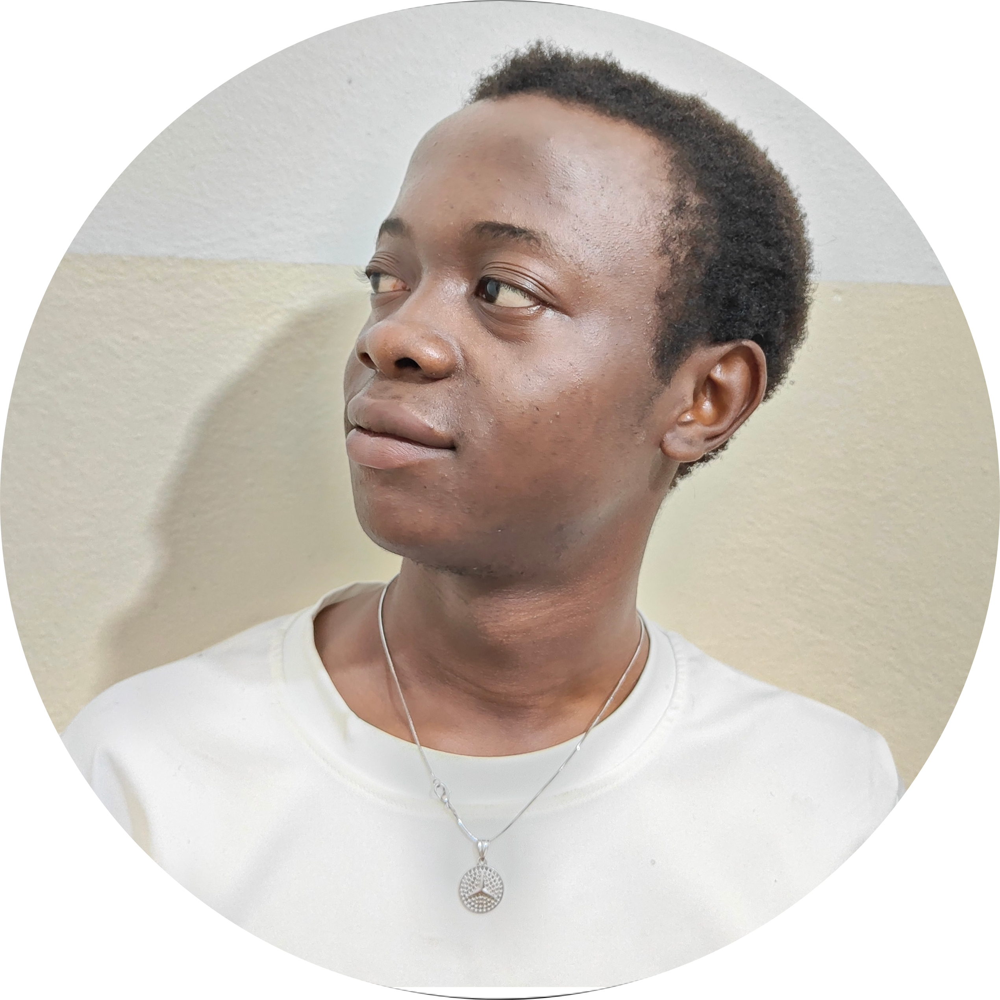

Azubi als Fachinformatiker für Anwendungsentwicklung
„Ich lerne, komplette Webprojekte sowie mobile Anwendungen für Computer und Android von A bis Z zu entwickeln.“
Ich heiße Wandji Nkamgnia Gregoire Jordan.
Meine Leidenschaft liegt an der Schnittstelle zweier wesentlicher Bereiche: dem Umweltschutz und der Softwareentwicklung. Ich bin überzeugt, dass Technologie eine entscheidende Rolle beim Aufbau einer nachhaltigen Zukunft spielen kann – und spielen muss.
In diesem Sinne habe ich eine innovative Webanwendung namens PyroKraft♻ entwickelt, die der Pyrolyse von Kunststoffabfällen gewidmet ist. Sie automatisiert die Berechnung der Prozessresultate und bietet so eine praktische Lösung zur Abfallverwertung bei gleichzeitiger Verringerung der Umweltbelastung.
Dieses Projekt wird ausführlich in meinem Portfolio vorgestellt – mit einer Seite, die sich den technischen und funktionalen Aspekten widmet.
Parallel dazu stelle ich in meiner Rubrik „Kompetenzen“ ein zweites persönliches Projekt vor: die Neuprogrammierung des Snake-Spiel🐍 in Python mit Pygame. Dieses Projekt zeigt meine Fähigkeit zur Gestaltung interaktiver Benutzeroberflächen und zur Anwendung objektorientierter Programmierkonzepte.
Durch diese Projekte möchte ich nicht nur meine technischen Fähigkeiten, sondern auch meine Motivation, Eigenständigkeit und meine engagierte digitale Vision unter Beweis stellen.
Ich bin überzeugt, dass Softwareentwicklung ein starkes Werkzeug im Dienst der Umwelt sein kann – und ich bin bereit, aktiv dazu beizutragen.
„Sieh dir das Video meiner Präsentation auf YouTube an.“
"Sieh dir den Code meines Portfolios auf GitHub an."
Sprechen wir über die Ausbildung in Deutschland
|  |
Möchten Sie mit mir sprechen, um mir ein Vorstellungsgespräch zu ermöglichen?
|
.jpg)